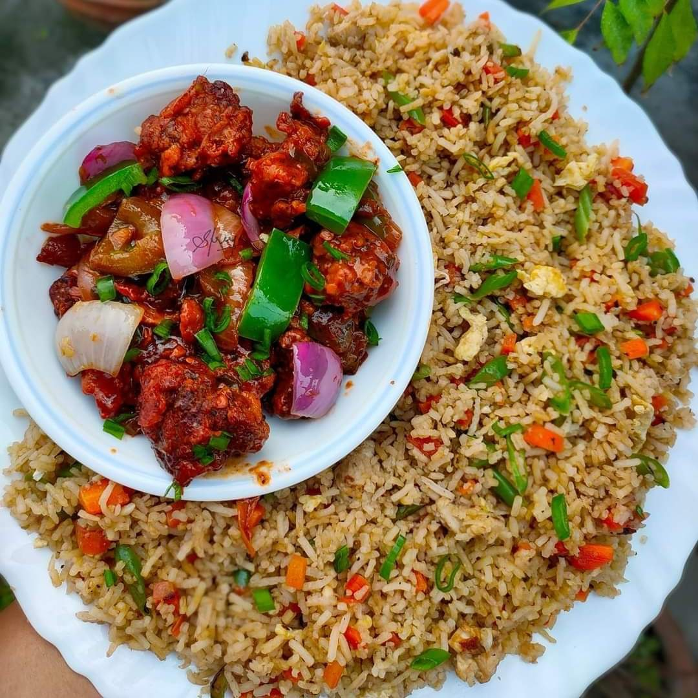

Bengali Vegetable Fried Rice with Chilli Chicken

Description
Fried Rice
Vegetable pulao, often called ‘vegetable fried rice’, is an
easy-to-cook, nutritious recipe. It is a common item on Bengali
wedding menus and is often served with fish fry, mutton kosha, or
fish kaliya. This fried rice can easily be modified to include
seasonal vegetables aside from the peas, beans, and carrots we’ve
used here. Long-grained, fragrant Basmati rice is ideal for this
preparation. The mark of a good fried rice is long unbroken grains
of rice and vibrant, crunchy veggies. In this recipe, we show you
techniques to help the vegetable retain their colour and crunch as
well as prevent the breakage of cooked rice while mixing.
Chilli Chicken
Chilli chicken is perhaps the most popular Indo-Chinese dish found
both in restaurants and street side stalls. No visit to Calcutta’s
Chinatowns (especially Tangra) is complete without an order of
chilli chicken. The dry chilli chicken works as a snack, appetiser
as well as a side. The gravy chilli chicken is more popular as a
side to either chowmein or with fried rice. There are various
versions of the chilli chicken recipes. While you can play around
with the sauces you like in your chilli chicken, most folks will
agree that the best chilli chicken has the chicken still crispy
when served. With that goal in mind we tested both the wet batter
as well as the dry breading technique and finally went with breading.
What yielded the crunchiest chicken was Kenji Lopez-Alt’s method
which he had used in his
General Tso’s Chicken recipe in Serious Eats Food Lab. Do
give this a try and let us know how it goes!
Ingredients for Fried Rice
- 300 g basmati rice
- 100 g carrots
- 100 g beans
- 50 g peas
- 4 pcs bay leaves
- 1 stick cinnamon
- 4 pcs cardamom
- 4 pcs cloves
- 25 g cashew nuts
- 25 g raisins
- 6 pcs green chillies
- ½ tsp peppercorns
- ½ tsp garam masala powder
- 16 g salt
- 26 g sugar
- 10 g ghee
- 15 g vegetable oil
Ingredients for Chilli Chicken
- 250 g boneless chicken thigh (3-cm cubes)
For the marinade
- 15 g egg white of half and egg
- 15 g dark soy sauce
- 10 g Chinese cooking wine (optional)
- 2 g ginger paste
- 2 g garlic paste
- 3 g salt
- ½ tsp pepper
- 1 pinch baking soda
- 12 g cornflour
For breading the chicken
- ¼ cup (30 g) cornflour
- ¼ cup (30 g) all-purpose flour (maida)
- ¼ tsp baking powder
- 3 g salt
For the sauce
- 20 g vegetable oil
- 2 pcs dried red chillies
- 75 g onions (3-cm squares)
- 50 g capsicum (3-cm squares)
- 5 g ginger (finely chopped)
- 5 g garlic (finely chopped)
- 10 g green chillies (2-mm thick, cut on the bias)
- 8 g dark soy sauce
- 8 g light soy sauce
- 10 g Chinese cooking wine (optional)
- 10 g vinegar
- 20 g tomato ketchup
- 15 g red chilli sauce
- 75 g chicken stock (or water)
- 1 pinch MSG
- 1 tsp ground pepper
- 2 g salt
- 20 g sugar
- ~200 g oil for frying
Method of making Fried Rice
- Wash and boil the rice in a pot full of water until it is 90
per cent tender. Drain the water and spread the rice over a
colander so that it doesn’t cook any further.
- Dice the carrots in 1-cm cubes. Chop the beans on the bias
(in 1-cm sections) for a nice trapezoid shape. Shell the peas.
Slit the green chillies.
- Freshly grind the peppercorns so that you have about ½ tsp
pepper. Mix it with the garam masala powder, salt, and sugar.
Combining the spices and seasoning before adding them to the rice
will ensure even distribution.
- Set a pan on medium heat and add vegetable oil and ghee to it.
Once hot, temper the oil with the bay leaves, cinnamon,
cardamom, cloves, and about five peppercorns.
- Add the cashewnuts and fry them until they are lightly coloured.
We don’t want them completely golden at this stage as they will fry
throughout the cooking process.
- Turn up the heat and add the carrots. Stir-fry them for 2
minutes before adding the beans. Fry the beans for 2 minutes
and then add the peas and raisins. Keeping the heat high
ensures that the veggies retain their vibrant colours and don’t
lose crunch.
- Turn off the heat and layer half the cooked rice over the vegetables.
Sprinkle half the premixed seasoning. Top off with the remaining rice
and seasoning. Also add the green chillies.
- To mix the rice thoroughly while ensuring minimal breakage of
the grains, use the fold and rotate motion as shown in the video.
Do this until everything is well combined.
- Cover the pan and set it over the lowest heat setting for about
20 minutes and steam until the rice has cooked completely.
Check once or twice to see that the rice isn’t sticking to the
bottom of the pan. Rest for at least 10 minutes before serving.
Method for Preparing Chilli Chicken
Prep the Chicken
- Cut the chicken in 3-cm cubes and set aside.
- Mix together all the ingredients under the 'For the marinade' section.
Pour half of this mixture over the chicken cubes, and reserve the other
half for use later.
- Coat the chicken well with the marinade, and set it aside to rest
for at least 30 minutes.
Make the sauce
- Meanwhile, prep for the sauce. Cut onions and capsicum in 3-cm squares, chop ginger and garlic
finely, and cut green chillies and spring onions on the bias. Keep everything chopped and
ready.
- Make a sauce solution by mixing together dark soy, light soy, Chinese cooking wine, vinegar,
ketchup, red chilli sauce, salt, pepper, MSG and chicken stock in the proportions given in the
'For the sauce' section. Keep this mixture ready as well.
- Make a cornflour slurry using ½ tsp cornflour and 1 tsp water. Set aside.
- Now, once the vegetables, sauce mixture and cornflour slurry are ready, heat up your wok.
Add 20 g vegetable oil and allow it to smoke. Add dried red chillies, followed by onions and
capsicum. Fry on high heat for a minute before adding sugar. Cook the sugar until slightly
caremelised (1 minute). This will allow for the creation of the sticky sauce we've come to
associate with chilli chicken.
- Next, add ginger and green chillies, and fry for 30 seconds before adding garlic.
Then add the sauce solution. When it comes to a boil, add the cornflour slurry. Turn off
the heat. We will come back to the sauce later.
Fry the chicken
- Back to the chicken: To bread the chicken prepare a mixture of cornflour, flour, salt and
baking powder in the proportions given in the 'For breading the chicken' section.
Now add the remaining half of the marinade we reserved right at the start. Rub it
into the flour mixture thoroughly until you it resembles breadcrumbs in texture.
- Now, taking chicken pieces 2 or 3 at a time, coat them in the breading, pressing it down so
that it sticks to the chicken. Drop them in oil on medium heat (at roughly 170°C). Fry
until golden brown and crisp.
- On an adjoining burner, heat up the sauce again. Drain the chicken from the oil and
immediately transfer it to the sauce. Toss to coat. Garnish with spring onions and serve
immediately, while the chicken is still crisp.
Return to top!
Return to main page!